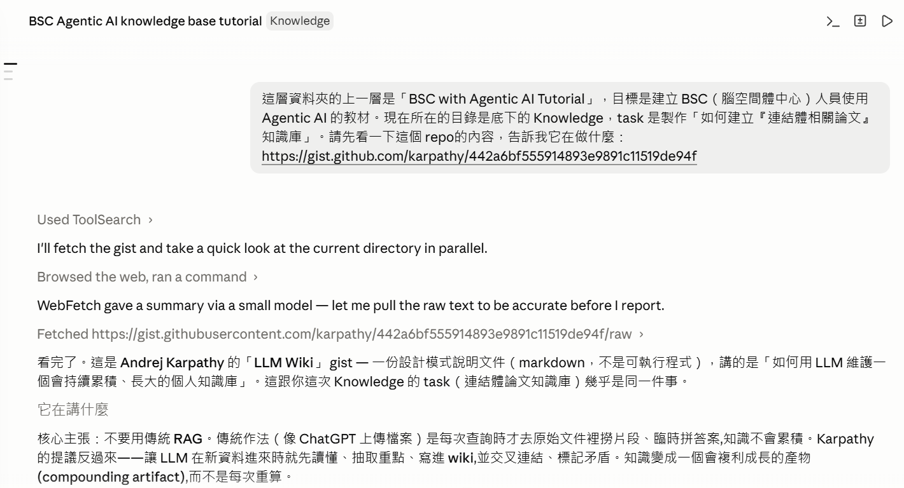
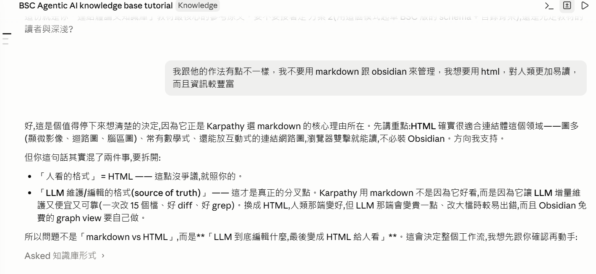
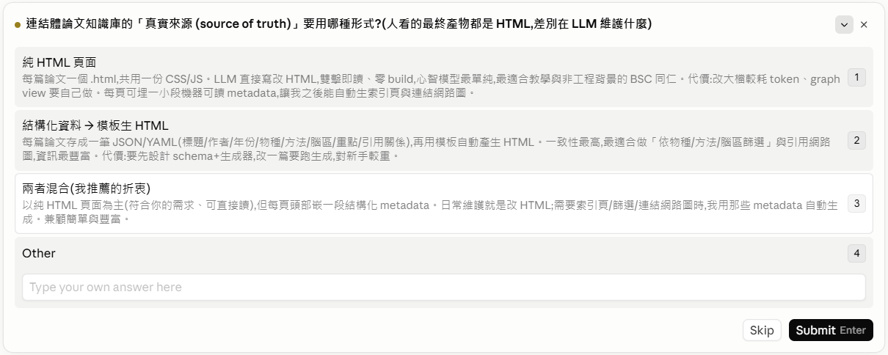
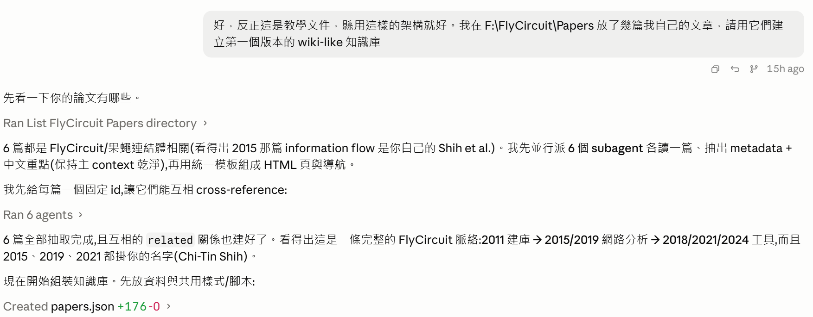
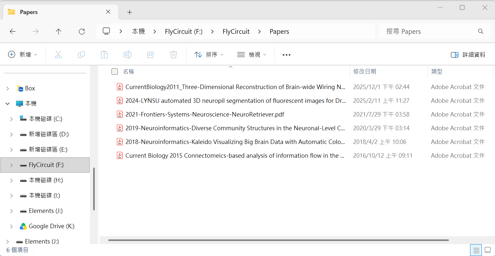
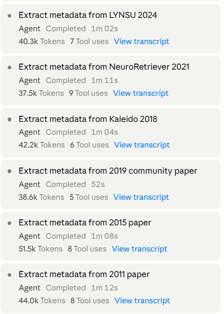
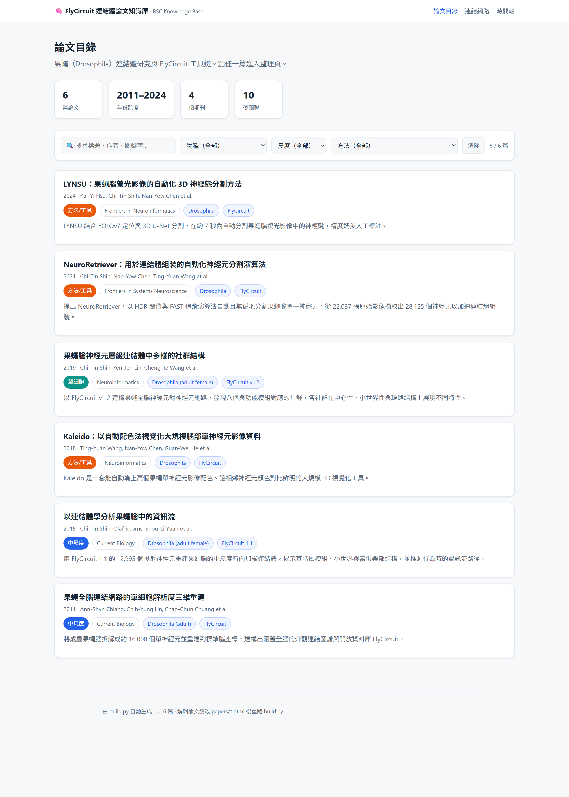
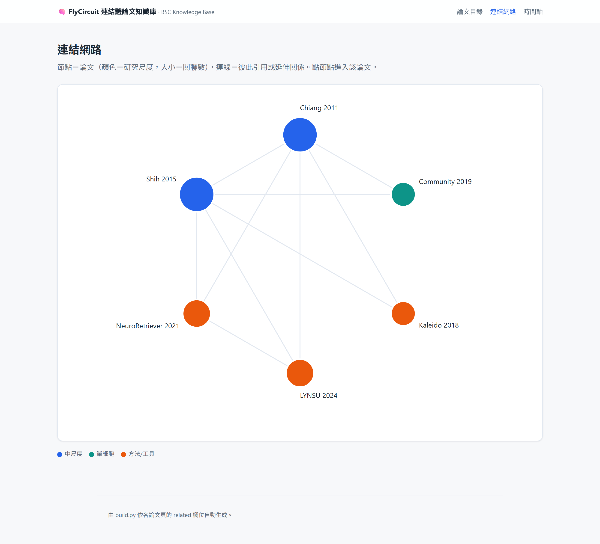
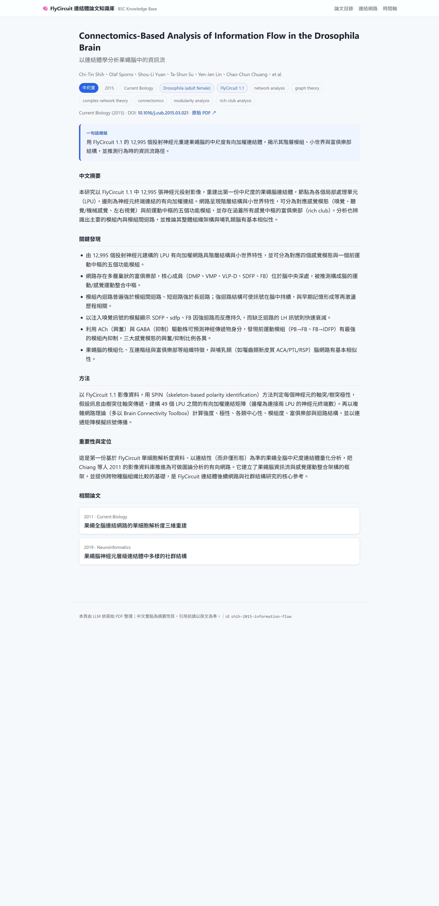
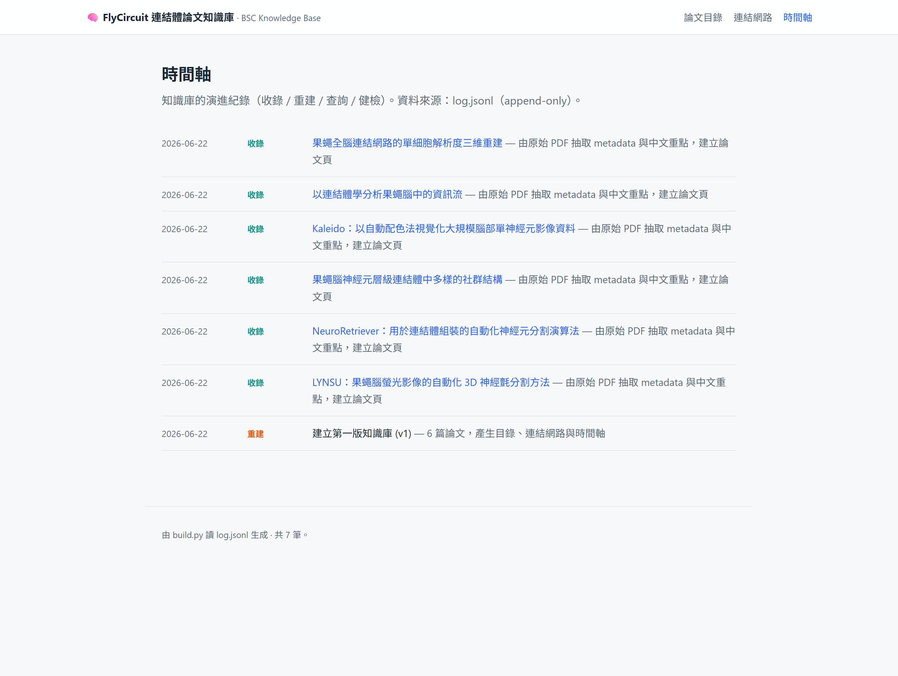

← BSC with Agentic AI Tutorial · EP01
一次真實協作的完整重演：把 6 篇果蠅連結體論文，變成一個會持續長大、人類好讀的 HTML 知識庫。
📺 影片版
不想讀字？可以先看影片導覽，再回來細讀；兩者內容一致。
後面 Part 1 會逐句重現使用者跟 AI 的對話。為了讓你一眼看出「這句話在做什麼」，所有使用者發言用五種顏色標示。這個分類本身就是一個重要觀念：跟 AI 協作不是只會「叫它做事」，更重要的是在對的時機問問題、做決策、踩剎車。
小提醒：好的教訓往往來自 🔴 與 🟡。當你「指出方向」或「喊停」時，AI 才會修正路線，而不是一路把錯的方向做到底。
看到不懂的詞先回來查。兩張表分別對應這個專案的兩個面向。
| 名詞 | 白話解釋 |
|---|---|
| 知識庫 (knowledge base) | 把資料整理成彼此連結、可持續累積的結構，而不是一堆散落的檔案。 |
| 真實來源 (source of truth) | 同一份資訊「以哪個檔案為準」。本專案以每篇論文的 HTML 頁為準，其餘自動生成。 |
| metadata（後設資料） | 「描述資料的資料」，例如一篇論文的年份、作者、物種、方法。本專案把它藏在每頁 HTML 裡，給程式讀。 |
| HTML / CSS | HTML 是網頁的內容，CSS 是它的外觀。雙擊就能用瀏覽器打開，不必安裝任何軟體。 |
| build script（建置腳本） | 一支小程式（這裡是 build.py），掃過所有論文頁，自動產生目錄、網路圖、時間軸。 |
| headless 瀏覽器 | 沒有視窗、在背景跑的瀏覽器。本專案用它把網頁「自動截圖」成圖檔。 |
| 名詞 | 白話解釋 |
|---|---|
| Agentic AI | 「會自己動手」的 AI——不只回答問題，還能讀檔、寫檔、執行指令、截圖、分工，完成多步驟任務。 |
| Claude Code | 本案例用的 Agentic AI 工具。它能直接在你的電腦上讀寫檔案、跑程式。 |
| context（上下文） | AI 當下「記得」的所有對話與檔案內容。空間有限，所以要保持乾淨、別塞無關的東西。 |
| Subagent（子代理） | AI 派出去做單一任務的分身。本專案派 6 個分身同時各讀一篇 PDF，主線不被淹沒。 |
| Skill（技能） | 預先寫好的「工作流模板」。這份教學本身就是用一個叫 claude-code-research-tutorial 的 Skill 產出的。 |
| 決策選單 (AskUserQuestion) | AI 遇到「該由你決定」的岔路時，跳出選項讓你點選，而不是替你猜。 |
| CLAUDE.md | 放在資料夾裡的「規則書」。AI 之後再打開這個資料夾，會自動先讀它、照規則做。 |
第一次跟 Agentic AI 協作，先記住這 6 件事，就能避開大部分新手坑：
以下按時間順序，重現整個協作。每段：編號 → 使用者說了什麼（彩色框）→ AI 做了什麼。穿插的截圖與介面圖讓你看到實際畫面。
gist.github.com/karpathy/442a6bf...
誰是 Karpathy？Andrej Karpathy 是全球知名的 AI 研究者：OpenAI 創始成員之一、曾領導特斯拉（Tesla）的自動駕駛 AI，之後創辦教育新創 Eureka Labs；2026 年 5 月加入 Anthropic（也就是開發 Claude 的公司）的 pre-training 團隊。他以把複雜觀念講得淺顯易懂著稱。這套「用 LLM 維護知識庫」的點子，就是他寫成一份公開文件分享出來的。
📄 原始文件：Karpathy 的「LLM Wiki」gist
什麼是「LLM Wiki」？多數人用 AI 讀文件靠的是 RAG（檢索增強生成）——你上傳一堆檔案，每次提問時 AI 才臨時去原始文件裡撈出相關片段、現場拼一個答案。問題是知識不會累積：同樣一個需要綜合五份文件的問題，它每次都得重新翻找、重新拼湊，沒有任何東西被「建立」起來。
LLM Wiki 反過來做：新資料一進來，就讓 AI 當場讀懂、抽出重點、寫成一頁，並和既有內容互相連結、標出矛盾。知識被「編譯」一次後就持續保持更新，而不是每次提問才重算。於是它成為一個會複利成長的產物——交叉引用早就建好、該標的矛盾早就標好、整體脈絡反映了你讀過的所有東西。問越多、加越多，它就越完整。
三層架構：① 原始來源——你蒐集的 PDF、文章、圖，不可變，AI 只讀不改；② Wiki——AI 生成、也完全由 AI 維護的一頁頁筆記，互相連結；③ 設定檔（在 Claude Code 裡就是 CLAUDE.md）——告訴 AI 這個知識庫怎麼組織、收錄／查詢／健檢各照什麼規矩走。這份設定檔正是讓 AI 變成「有紀律的維護者」而非普通聊天機器人的關鍵。
為什麼有效？維護知識庫真正累人的不是讀、也不是想，而是瑣碎的後勤：更新交叉引用、讓摘要保持最新、發現新資料和舊結論衝突、在幾十頁之間維持一致。人會放棄維護 wiki，正是因為這些後勤成本長得比價值還快。但 AI 不會累、不會忘記更新某個連結，一次能改十幾個檔——維護成本趨近於零。人只負責找資料、出題、提問與判斷，AI 負責其餘的一切。本專案就是把這個想法，改用 HTML（而非 Karpathy 原本的 Markdown）具體做出來。
references/karpathy-llm-wiki.md（約 12 KB），讀完整份確認無誤。教訓：當作教材的參考素材，要落地成檔案，而不是只留在對話裡。
這是整個專案最重要的岔路。AI 沒有替使用者猜，而是跳出決策選單（這是 Agentic AI 很關鍵的一個互動——遇到該由人決定的事，就停下來問）：

F:\FlyCircuit\Papers 放了幾篇我自己的文章，請用它們建立第一個版本的知識庫。
F:\FlyCircuit\Papers。使用者提供的原始素材——6 篇 PDF 論文，這就是知識庫的「原始來源」層：

F:\FlyCircuit\Papers），這就是知識庫的「原始來源」層。
結果發現這 6 篇構成一條清楚的脈絡：2011 建庫 → 2015／2019 網路分析 → 2018／2021／2024 工具，而且 2015、2019、2021 等多篇都掛使用者本人（Chi-Tin Shih）的名字。
style.css、互動腳本 wiki.js、產生論文頁的 scaffold.py、產生導覽頁的 build.py。執行後得到 6 個論文頁，以及自動生成的目錄、網路圖、時間軸。每個論文頁同時含「人讀內容」與「機器讀 metadata」：
<script type="application/json" id="meta">
{
"id": "shih-2015-information-flow",
"year": 2015, "venue": "Current Biology",
"species": "Drosophila (adult female)",
"scale": "mesoscale",
"related": ["chiang-2011-flycircuit", "community-2019"]
}
</script>
CLAUDE.md，把架構、欄位定義、命名規則、收錄/查詢/健檢流程、受控詞彙都寫下來。如此一來，未來任何一次工作階段一打開這個資料夾，AI 都會自動先讀規則、照規矩維護，不會走樣。claude-code-research-tutorial），沿用它的結構（五色對話框、名詞速查表、四大 Part），改寫成你正在讀的這份獨立 HTML。把上面的經驗濃縮成一張可快速掃描的表。想看實例就點「對應段落」跳回去。
| 實踐 | 對應段落 | 為什麼重要 |
|---|---|---|
| 重要素材看原文，不靠二手摘要 | ① | 摘要可能失真，定論前要核對來源。 |
| 把模糊需求先拆清楚 | ③ | 「需求」常混了好幾件事，拆開才不會做錯方向。 |
| 權衡明顯不同時，給選項讓人決策 | ④、⑪ | 該由人決定的事，AI 不該替你猜。 |
| 人讀層與機器層分離 | ④、⑦ | 同一檔兼顧「好看」與「可自動處理」。 |
| 真實來源一份，其餘自動生成 | ⑦ | 避免兩份資料不同步。 |
| 研究/讀檔派 Subagent | ⑥ | 保持主線乾淨，又能平行加速。 |
| 先立規則與受控詞彙（CLAUDE.md） | ⑨ | 讓知識庫長大時不走樣、未來階段自動遵守。 |
| 驗證成果，不只「跑完」 | ⑧ | 結構檢查＋真截圖，確認真的做對。 |
| 重複工作優先自動化 | ⑧、⑪ | headless 批次截圖勝過一張張手動操作。 |
Knowledge/
├── CLAUDE.md # 規則書（AI 維護知識庫的規範）
├── index.html ★ # 目錄（可篩選 / 搜尋） ┐
├── graph.html ★ # 論文連結網路圖 ├ 自動生成
├── log.html ★ # 時間軸 ┘
├── build.py # 建置腳本：論文頁 → 上面三個導覽頁
├── assets/style.css # 共用樣式
├── assets/wiki.js # 共用互動（篩選）
└── papers/ # ★真實來源：每篇論文一頁 HTML
├── chiang-2011-flycircuit.html
├── shih-2015-information-flow.html
└── …（共 6 篇）
（★ = 自動生成，不手改）每篇論文頁裡的「相關論文」欄位，被 build.py 自動連成一張網路圖。節點越大代表關聯越多——可以看到 2011 建庫論文與 2015 資訊流論文是兩個樞紐：

每篇論文都被整理成一頁：標題、一句話總結、中文摘要、關鍵發現、方法、重要性、相關論文，並連回原始 PDF 與 DOI。下圖是使用者本人 2015 年那篇：


| 項目 | 內容 |
|---|---|
| 收錄論文 | 6 篇（2011–2024，4 個期刊） |
| 論文間關聯 | 10 條（自動連成網路圖） |
| 產出頁面 | 6 篇論文頁 + 目錄 + 網路圖 + 時間軸 |
| 程式 | scaffold.py、build.py、style.css、wiki.js |
| 規則書 | CLAUDE.md（讓未來維護自動遵守） |
| 人寫的程式碼 | 0 行——全部由 AI 產出，人只負責出題與決策 |
要加一篇新論文，流程很短（都可以交給 AI 做）：
papers/<id>.html → 更新相關論文的連結。python build.py，目錄／網路圖／時間軸自動更新。知識就這樣一篇篇複利累積，而不是每次都從頭翻 PDF。
看完上面整段真實過程，把精髓濃縮成這 9 條帶走——每條都對應你剛剛讀到的某個段落。
build.py 掃描後重新生成。教訓：能自動生成的，就不要手動維護兩份——否則遲早不同步。CLAUDE.md（規則書），明訂欄位定義、命名規則、維護流程，還規定「研究尺度」只能用固定幾個詞。教訓：先立規矩，知識庫長大才不會亂。如果這份文件你只想記住三句話：
想動手試試看？最低成本的起點：找一個你熟悉的小主題（幾篇論文、幾份筆記），打開 Claude Code，把它指到那個資料夾，說一句「幫我把這些整理成一個 HTML 知識庫」——然後照這份文件裡的節奏，在岔路上做決策、在每一步要求驗證。你會發現，你負責思考與判斷，AI 負責其餘的一切。
claude-code-research-tutorial Skill）。文中截圖皆為真實畫面：成果頁面以 headless 瀏覽器自動截取，操作介面為實際操作截圖。｜BSC with Agentic AI Tutorial